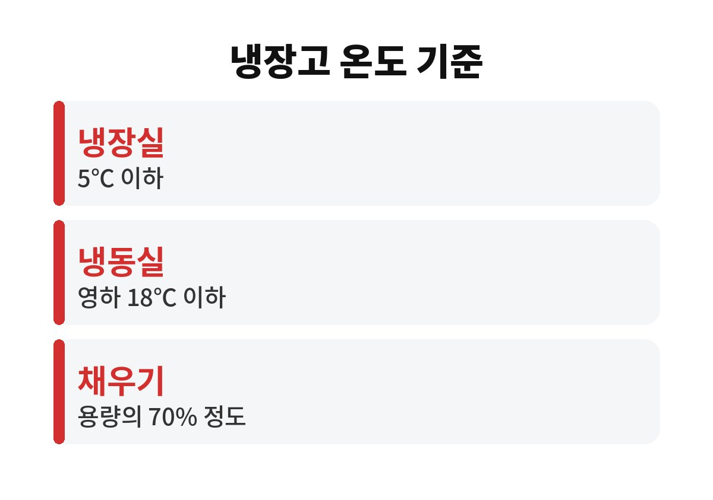
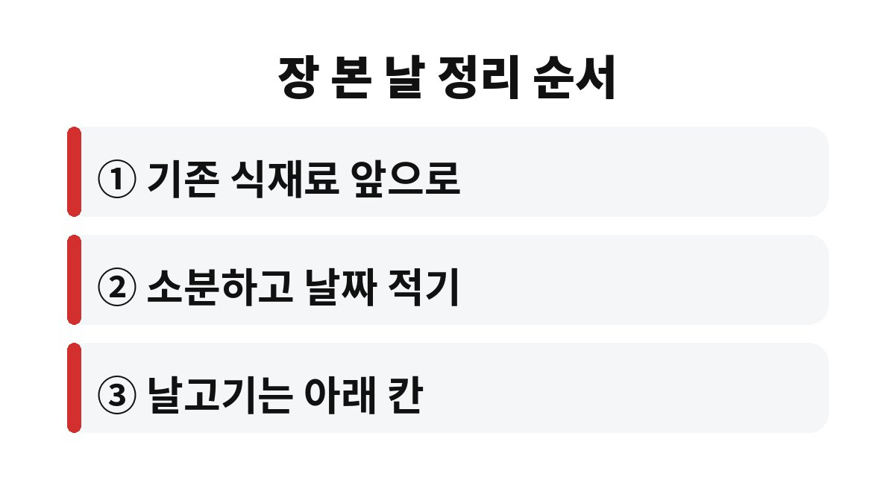

냉장고 식재료 보관은 무엇을 사느냐보다 어느 칸에 두느냐에 따라 버리는 양이 달라진다.
냉장고 안은 한 가지 온도가 아니어서, 같은 우유라도 문칸에 두면 안쪽 선반보다 온도 변화를 훨씬 자주 겪는다.
식품의약품안전처가 안내하는 냉장·냉동 기준을 바탕으로 칸별 자리를 정리했다.
냉장실은 찬 공기가 돌아야 온도가 유지된다.
식재료를 빈틈없이 채우면 냉기 통로가 막혀 안쪽과 앞쪽의 온도 차이가 커진다.
식약처도 냉장고는 용량의 70% 정도만 채우라고 안내한다.
문은 하루에도 수십 번 열리고 닫힌다.
그때마다 바깥 공기와 바로 닿는 곳이 문칸이라, 냉장고에서 온도가 가장 자주 오르내리는 자리다.
우유처럼 상하기 쉬운 식품보다 소스, 음료, 잼처럼 덜 예민한 것을 두는 편이 낫다.
달걀 칸이 문에 달린 제품이 많지만, 나는 달걀을 원래 포장째 안쪽 선반에 두는 쪽을 택했다.
냉동은 세균을 없애는 것이 아니라 활동을 멈추게 하는 것이다.
녹으면 다시 늘어날 수 있어서 한 번 해동한 고기를 다시 얼리는 일은 피한다.
얼린 날짜를 봉지에 적지 않으면 몇 달 지난 고기를 냉동실 구석에서 찾는 일이 생긴다.
밥과 빵은 한 번 먹을 양만큼 납작하게 펴서 얼리면 해동이 빠르고 남는 양도 적다.
식약처는 가정용 냉장고의 냉장실을 5℃ 이하, 냉동실을 영하 18℃ 이하로 유지하라고 안내한다.
다만 화면에 뜨는 숫자는 설정값이다.
실제 온도가 궁금하면 냉장고용 온도계를 가운데 선반에 두고 하루 뒤에 본다.
나는 설정값과 실제 온도가 같다고 여겼는데, 온도계를 두어 보니 문을 자주 연 저녁에는 숫자가 눈에 띄게 올라갔다.
| 자리 | 온도 특징 | 어울리는 식재료 |
|---|---|---|
| 문칸 | 여닫을 때마다 오르내림 | 소스·음료·잼 |
| 위·가운데 선반 | 비교적 일정함 | 반찬·남은 음식·유제품 |
| 아래 칸 | 찬 공기가 모임 | 생고기·생선(밀폐 용기) |
| 채소칸 | 습기가 유지됨 | 채소·과일(봉투 따로) |
| 냉동실 | 영하 18℃ 이하 | 소분한 고기·밥·빵 |

날고기를 아래 칸에 두는 이유는 온도보다 국물이 떨어지는 방향 때문이다.
위 칸에 둔 생고기 핏물이 아래 반찬으로 떨어지면 익히지 않고 먹는 음식까지 오염될 수 있다.
그래서 밀폐 용기에 담더라도 자리는 맨 아래로 정해 둔다.
채소칸은 다른 칸보다 습기가 오래 남도록 만들어진 공간이다.
잎채소는 물기가 묻은 채 넣으면 금방 무르고, 반대로 너무 마르면 시든다.
그래서 씻지 않은 상태로 키친타월에 한 번 감싸 봉투에 넣고, 씻는 건 먹기 직전에 한다.
사과처럼 익으면서 주변 채소의 숙성을 앞당기는 과일은 잎채소와 봉투를 나눠 담는다.

장 본 직후에는 문을 열어 둔 채로 정리하기 쉽다.
넣을 자리를 미리 정하고 한 번에 넣으면 문이 열려 있는 시간이 확 줄어든다.
양문형이나 칸 전환 기능이 있는 제품은 구조가 달라 위 표를 그대로 옮기기 어렵다.
이럴 땐 설명서에 적힌 칸별 용도를 먼저 따른다.
소분이 귀찮아 고기를 한 덩어리로 얼린 날도 있었는데, 결국 해동할 때 통째로 녹아 남은 양을 처리하느라 더 번거로웠다.
냉장고 정리는 한 번 크게 뒤집기보다 장 볼 때마다 자리를 지키는 쪽이 덜 지친다.
다음에 볼 것은 냉장실 뒤쪽 벽에 성에나 물방울이 자주 맺히는지다.
그렇다면 문 고무패킹이 헐거워졌을 수 있으니 제조사 서비스센터에 점검을 문의하는 게 빠르다.
참고 자료: 식품의약품안전처 식품안전나라 「식품의 기준 및 규격 – 보존 및 유통기준」(2026년 11월 확인)
※ 2026년 기준 공공기관 안내를 바탕으로 정리한 글이며, 집 구조와 제품에 따라 결과가 다를 수 있어 제품 설명서를 함께 확인하길 바란다.